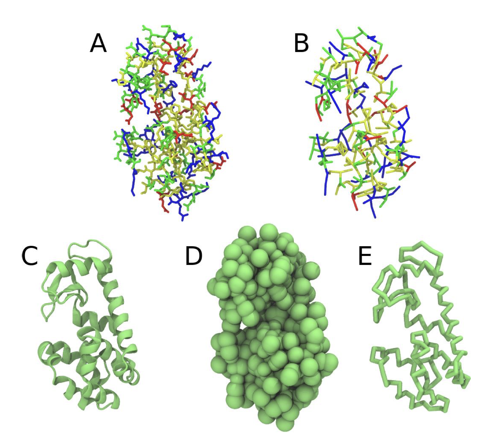
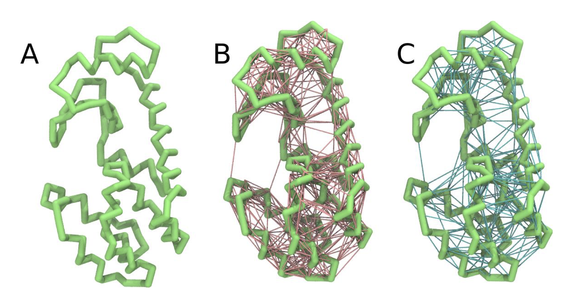
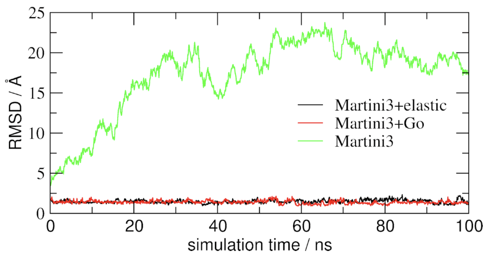

Proteins - Part I: Basics and Martinize 2
WARNING: THIS TUTORIAL IS DEPRECATED. SEE THE UPDATED TUTORIAL ELSEWHERE. THIS TUTORIAL USES THE OLD IMPLEMENTATION OF GOMARTINI.
In case of issues, please contact thallmair@fias.uni-frankfurt.de or paulo.telles-de-souza@ibcp.fr.Summary
Introduction
Accordingly with Martini 3 rules [1], the Martini Protein model groups 2-4 non-hydrogen atoms together in one coarse-grained bead. Each residue has one backbone bead and 0-5 side-chain beads depending on the side chain of the residue. In contrast to the previous version [2-4], the secondary structure of the protein influences only the bond/angle/dihedral parameters of each residue. The backbone bead size and type depends solely of the mapping and geometry (linear or branched) of the fragment, with P2 used as default bead chemical type. Residues such as glycine, alanine, valine and proline used different bead types (with only slight differences in polarity and size) given the differences in the mapping, which were chosen to avoid overmapping problems [5]. It is noteworthy that the local secondary structure is predefined by the bonded parameters and thus imposed throughout a simulation. While simple peptides can be easily modeled with this approach, proteins usually need an extra bias to keep a stable tertiary structure, which can be provided by elastic network [6] or Gō-like models [7]. Additional improvements of the protein stability and reliability are achieved by applying the side chain corrections option to add dihedral angles which improve the side chain orientation [8].
Setting up a coarse-grained protein simulation consists basically of three steps:
- converting an atomistic protein structure into a coarse-grained structure;
- generating a suitable Martini topology;
- solvating the protein in the desired environment.
The first two steps are done using the publicly available program martinize2. The last step can be done with the tools available in the GROMACS package and/or with ad hoc scripts. In this part of the tutorial, basic knowledge of GROMACS commands is assumed and not all commands will be given explicitly. Please refer to the previous tutorials and/or the GROMACS manual.
The aim of the first module of this tutorial is to define the regular workflow and protocols to set up a coarse-grained simulation of the soluble globular protein T4-lysozyme. Three strategies are presented and compared: i- no bias; ii- elastic networks; and iii- GōMartini. In a second module of this Proteins tutorial we will cover how to insert a transmembrane peptide (KALP) in a lipid bilayer using a standard Martini 3 description.
The files required for this tutorial (including worked files) can be downloaded from here.
Soluble proteins
The downloaded file is called M3_proteins_tutorial_part1.zip and contains a worked version (using GROMACS 2020) of this module. You do not need all folders of this file to get going on this tutorial. Only the folder template is important. In addition, you can use the worked versions to check your own work. For this part of the tutorial, the worked files are in the martini3_worked folder. Create your own directory to work the tutorial yourself. Instructions are given for files you need to download or get from the template folder, etc. You do not need any files to start with. Now go to your own directory.
After getting the atomistic structure of L99A T4 lysozyme (pdb code 181L) [9], you’ll need to convert it into a coarse-grained structure and to prepare a Martini 3 topology for it. Once this is done the coarse-grained structure can be minimized, solvated and simulated. The steps you need to take are the following:
- Download 181L.pdb from the Protein Data Bank. It is also available in the template folder:
wget http://www.rcsb.org/pdb/files/181L.pdb- The first step before start working with
martinize2is to clean/fix your atomistic pdb file. You should remove water and other molecules usually used for crystallization. In case there are missing residues or loops you should complete the protein structure using your favorite modeling code (alphafold2,modeller, etc). Note that cofactors that can be present and might be important for the protein structure and function are not covered by this tutorial. In the case of T4 lysozyme, you only need to remove the waters and a ligand. This can simply be done using the command:
grep "^ATOM" 181L.pdb > 181L_clean.pdbThe clean pdb structure can be used as input for martinize2 (installation instructions available here), to generate both a coarse-grained structure and a Martini 3 topology file. Note that martinize2 might not work with older versions of python! We know it does work with versions 3.X. Have a look at the help function (i.e. run martinize2 -h) for the available options. Hint, valid for any system simulated with Martini: during equilibration it might be useful to have (backbone) position restraints to relax the side chains and their interaction with the solvent; we are anticipating doing this by asking martinize2 to generate the list of atoms involved. The final command might look a bit like this:
martinize2 -f 181L_clean.pdb -o t4l_only.top -x t4l_cg.pdb -ssWe are asking for version 3 of the Martini force field via the flag -ff. When using the -dssp option you’ll need the dssp binary, which determines the secondary structure classification of the protein backbone from the structure. It can be downloaded from the https://github.com/cmbi/dssp/releases. Note that martinize2 only works with the dssp versions 3.1.4 or older, because the output changed in the latest dssp version 4. If installed centrally, the path is usually /usr/bin/dssp. As an alternative, you may provide the required secondary structure yourself and feed it to the script:
martinize2 -f 181L_clean.pdb -o t4l_only.top -x t4l_cg.pdb -ssOutput:
CCHHHHHHHHHCCEEEEEECTTSCEEEETTEEEESSSCHHHHHHHHHHHHTSCCTTBCCHHHHHHHHHHHHHHHHHHHHHCTTTHHHHHHSCHHHHHHHHHHHHHHHHHHHHTCHHHHHHHHTTCHHHHHHHHHSSHHHHHSHHHHHHHHHHHHHSSSGGGC -p backbone -ff martini3001The meaning of the abbreviations is: H: α-helix, B: residue in isolated β-bridge, E: extended strand, participates in β ladder, G: 3-helix (3-10 helix), I: 5 helix (π-helix), T: hydrogen bonded turn, S: bend, C: loop or irregular.
- If everything went well, the script generated three files: a coarse-grained structure (
.pdb; Fig. 1), a master topology file (.top), and a protein topology file (.itp). In order to run a simulation you need two more files: the Martini topology file (martini_v3.0.0.itp) and a run parameter file (.mdp). You can get examples from the Martini website or from thetemplatefolder. Don’t forget to adapt the settings where needed!

- Do a short minimization in vacuum (ca. 10-100 steps is enough!). Before you can generate the input files with
grompp, you will need to check that the topology file (.top) includes the correct Martini parameter file (.itp). If this is not the case, change theincludestatement. Also, you may have to generate a box, specifying the dimensions of the system, for example usinggmx editconf. You want to make sure, the box dimensions are large enough to avoid close contacts between periodic images of the protein, but also to be considerably larger than twice the cut-off distance used in simulations. Try allowing for a minimum distance of 1 nm from the protein to any box edge. Then, copy the example parameter file, and change the relevant settings to do a minimization run. Now you are ready to do the preprocessing and minimization run:
gmx editconf -f t4l_cg.pdb -d 1.0 -bt dodecahedron -o t4l_cg.grogmx grompp -p t4l_only.top -f minimization.mdp -c t4l_cg.gro -o minimization-vac.tpr -r t41_cg.grogmx mdrun -deffnm minimization-vac -v- Solvate the system with
gmx solvate(an equilibrated water box can be downloaded here; it is calledwater.gro. You can also find the file in the template folder. Make sure the box size is large enough (i.e. there is enough water around the molecule to avoid periodic boundary artifacts) and remember to use a larger van der Waals distance when solvating to avoid clashes, e.g.:
gmx solvate -cp minimization-vac.gro -cs water.gro -radius 0.21 -o solvated.groAs the protein is charged +8, it is recommended to add at least neutralizing counter ions; on top of that, you can add ions to reflect some ionic strength of the solution. Using a concentration of 0.15 M of NaCl is a popular choice given that is a good representation of the physiologic conditions. NOTE that you’ll need to get hold of a Martini topology file that specifies the ion topologies. Be careful in case you use strategies based on gmx genion. As each Martini water bead represents 4 water molecules, the concentration specified needs to be adapted to properly represent the target salt concentration.
- You need to update the topology to reflect the added water. Here, this is done by copying the topology for the single T4 lysozyme to
system.top(cp t4l_only.top system.top) and editing that to add a line with the number of water beads. The total number of W beads added bygmx solvatecan be seen in the terminal output of the command; alternatively trygrep -c W system-solvated.gro(where W is the name of a water bead). You will then do a short energy minimization and position-restrained (NPT) equilibration of the solvated system. Since themartinize.pyscript already generated position restraints (thanks to the-pflag), all you have to do is specify“define = -DPOSRES”in your parameter file (.mdp).
gmx grompp -p system.top -c solvated.gro -f minimization.mdp -o minimization.tpr -r solvated.grogmx mdrun -deffnm minimization -vgmx grompp -p system.top -c minimization.gro -f equilibration.mdp -o equilibration.tpr -r solvated.grogmx mdrun -deffnm equilibration -v- Start production run (without position restraints!); if your simulation crashes, some more equilibration steps might be needed. NOTE that you will get a warning about simultaneous use of Parrinello-Rahman barostat and newly generated velocities. This can be ignored by setting the
-maxwarn 1option.
gmx grompp -p system.top -c equilibration.gro -f dynamic.mdp -o dynamic.tpr -maxwarn 1gmx mdrun -deffnm dynamic -v- PROFIT! What sort of analysis can be done on this molecule? Start by having a look at the protein with
VMD(use the scriptcg_bonds-v5.tclto show the bonds defined in the T4 lysozyme topology) orpymol. It is often convenient to convert the trajectory so that translation and rotation of the protein is removed. (NOTE, however, that the water is also rotated and this may create some unwanted effects when viewing. It is up to you, really. One thing that does make sense is to make sure that beads that belong to the same molecule, e.g. the protein, are not split across periodic boundary conditions, see the section on elastic network below for explicit instructions how to do this withgromacstools.) Be aware that the.grofile given toVMDmust contain the same (number of) atoms as the.xtcfile. Therefore, if you choose to write only the protein to the.xtcfile, also prepare a.grofile with only the protein (minimization-vac.growill do).
gmx trjconv -f dynamic.xtc -s dynamic.tpr -fit rot+trans -o viz.xtcSelect Protein first and then System. Then, you can open the new viz.xtc with VMD.
vmd equilibration.gro viz.xtcAn option to display the bonds without the script cg_bonds-v5.tcl is to transform a .gro file to a .pdb file, and removed the line where is written ENDMDL in this .pdb file. This option should allow you to visualize the bonds defined by your itps in the tpr file.
gmx trjconv -f equilibration.gro -s dynamic.tpr -pbc whole -o equilibration.pdb -conectSelect System in this step. Then:
sed "/ENDMDL/d" -i equilibration.pdbvmd equilibration.pdb viz.xtcTo take a look at your simulation with pymol, the trajectory must also be converted to the .pdb format. This gives the opportunity to add bond information, which helps in viewing the molecules. Be aware that this file may be very large: you may want to reduce the number of frames. You can also reduce the size by only writing the protein coordinates (but you may want to visualize the solvent or ions as well, so it is up to you).
gmx trjconv -f dynamic.xtc -s dynamic.tpr -fit rot+trans -o viz.pdb -conectpymol viz.pdbStandard analyses for proteins include RMSD, RMSF, and radius of gyration. Refer to tutorials for atomistic models, for example by Tsjerk Wassenaar or Justin Lemkul. For the impatient ones, or if you just need a quick reminder: RMSD and RMSF can be calculated using the gromacs tools gmx rms and gmx rmsf, respectively.
Martini + elastic network
The aim of this second module is to see how the application of elastic networks can be combined with the Martini model to conserve the tertiary and quaternary structures more faithfully without sacrificing the structure of a protein. Please be advised that this is an active field of research and that there is as of yet no “gold standard”.
The idea is to generate a simple elastic network on the basis of a standard Martini 3 topology. The approach can be set up using martinize2 and will be shortly described below.
We recommend simulating a pure Martini coarse-grained protein (without elastic network) from the previous step, and then seeing which changes are observed when using an elastic network for the same protein. Note that you’ll need to simulate the protein for tens to hundreds of nanoseconds to see major changes in the structure; sample simulations are provided in the archive.
The first option to help preserving higher-order structure of proteins is to add to the standard Martini topology extra harmonic bonds between non-bonded beads based on a distance cut-off. Note that in standard Martini, long harmonic bonds can be already used to impose the secondary structure of extended elements (sheets) of the protein. Dihedrals could be used as well, but they tend to bring instabilities in this case – see the paper by Bulacu et al 2013 [10] for more information. Martinize2 will generate harmonic bonds between backbone beads if the option -elastic is set. It is possible to tune the elastic bonds (e.g.: make the force constant distance dependent, change upper and lower distance cut-off, etc.) in order to make the protein behave properly. The only way to find the proper parameters is to try different options and compare the behavior of your protein to an atomistic simulation or experimental data (NMR, etc.). A second option which can complement improvements in structure and dynamics of side chains is the use of side chain corrections (option -scfix), which are extra dihedrals added between side chains and backbone beads. Be aware that both elastic networks and side chain corrections are based on your reference atomistic structure. A last aspect that can be considered is the addition of disulfide bridges that can also be automatically detected by martinize2.
Here we will use basic parameters in order to show the principle.
- Use martinize2 to generate the coarse-grained structure and topology as above. For the elastic network, use the following extra flags:
martinize2 -f 181L_clean.pdb -o t4l_only.top -x t4l_cg.pdb -dssp /path/to/dssp -p backbone -ff martini3001 -elastic -ef 700.0 -el 0.5 -eu 0.9 -ea 0 -ep 0 -scfix -cys autoThis turns on the elastic network (-elastic), sets the elastic bond force constant to 700 \(kJ*mol^{-1}*nm^{-2}\) (-ef 700), the lower and upper elastic bond cut-off to 0.5 and 0.9 nm, respectively (-el 0.5 and -eu 0.9), and makes the bond strengths independent of the bond length (elastic bond decay factor and decay power, -ea 0 and -ep 0, respectively; these are default). Differently from the Martini 2 version, in Martini 3 the elastic network does not need to be defined as a #ifdef statement in the .top file. Note that martinize2 does not generate elastic bonds between \(i \rightarrow i+1\) and \(i \rightarrow i+2\) backbone beads, as those are already connected by bonds and angles (Fig. 2B). Also, elastic bonds are only added between beads that belong to the same chain.
- Proceed as before (steps 4 to 7) and start a production run. Keep in mind, we are adding a supplementary level of constraints on the protein; a supplementary relaxation step might be required (equilibration with position restraints and smaller time step for instance). If you have a set-up for the protein without elastic bonds (including solvent and possibly ions), you may use a snapshot from that simulation as the starting point here.
Martini + Gō-like model
In the third submodule of the protein tutorial, you will learn to apply Gō-like models in combination with the Martini model to conserve the tertiary and quaternary structures more faithfully. Recently, a combination of Gō-like models with Martini was presented by Poma et al. 2017 [7] . Backbone beads are connected based on a contact map and a Lennard-Jones potential describes the interaction between the connected backbone beads. Here, we give an introduction how to set up a protein with Martini 3 and a modified version of the Gō-like models. In particular, it requires the usage of martinize2 as well as the script create_goVirt.py which is capable of providing the Gō-like model. You can find more details about the new implementation in the preprint by Souza et al..
In brief, the modified version encompasses the following changes compared to the original GōMartini model: First, the Gō-like bonds are applied to virtual sites which are located at the same position as the backbone bead in the Martini protein model. They are implemented as regular non-bonded interactions which allows to treat them with the non-bonded cutoff scheme. Second, the regular non-bonded interaction between two backbone beads which are connected by a Gō-like bond is excluded. Third, a lower and upper limit for the distance between two backbone beads connected with a Gō-like bond is set.
The general work flow is the following: the Gō-like bonds are included as non-bonded interactions in special beads – called Gō beads from hereon – which will be defined in the martini_v3.0.0.itp. For this, the martini_v3.0.0.itp has to contain two #include statements which are only considered if you define the variable GO_VIRT in your topology file. This procedure is similar to the POSRES variable in a typical Martini protein .itp file. Two generic file names are used in the #include statements (BB-part-def_VirtGoSites.itp and go-table_VirtGoSites.itp) which themselves include the specific itps for the actual protein. The coarse-grained (CG) protein structure generated by martinize2 contains the additional Gō beads; the same holds for the t4l.itp (which will be the protein .itp file generated by martinize2 in this case). The t4l.itp contains also the virtual site definition of the Gō beads and an #include statement for the exclusions between the (real) backbone beads which are connected by Gō-like bonds.
To generate the GōMartini model of T4 lysozyme, you will have to first generate a Martini 3 protein model using martinize2 and secondly generate the Gō-like model with the additional script create_goVirt.py. The procedure is briefly described in the following:
- To set up a GōMartini model, the atomistic protein structure has to be martinized first using
martinize2. The option-govs-includeprepares at4l.itpready to include the Gō-like model. A second flag (-govs-moltype) specifies the molecule name; this name is used as prefix for the files containing the Gō-like model which will be generated by the separate scriptcreate_goVirt.py. If you specify the same molecule name forcreate_goVirt.py, and if the files containing the Gō-like model are in the same directory, you do not have to change anything in the generatedt4l.itp! A command for T4 lysozyme could look like this:
martinize2 -f 181L_clean.pdb -o t4l_only.top -x t4l_cg.pdb -dssp /path/to/dssp -p backbone -ff martini3001 -govs-include -govs-moltype t4l -scfix -cys autoThe CG pdb structure obtained from
martinize2is required for the next step together with a contact map of the atomistic protein structure. The contact map has to be obtained from the web-server http://info.ifpan.edu.pl/~rcsu/rcsu/index.html using the default settings for the radii and the Fibonacci number. Please note that the requirements for the.pdbfile uploaded to the web-server are quite strict. Thus please check carefully if your contact map is meaningful before using the contact map in the next step. In particular, the table listing the “Residue residue contacts” will be used.The script
create_goVirt.pygenerates all additional files required for your GōMartini model. The script requires the CG structure of the protein in.pdbformat (-s), the number of CG beads in the protein excluding the virtual Gō beads (--Natoms), the number of missing residues in the atomistic structure (--missres), as well as the contact map file (-f). The prefix of the generated files can be specified (--moltype) to e.g. distinguish different protein chains which are not connected by Gō-like bonds. Note that if the Gō-like model will be combined with a coarse-grained protein generated bymartinize2, the same name must be specified as for the--govs-moltypeflag ofmartinize2. In addition, the dissociation energy of the Lennard-Jones potentials (--go_eps) as well as the lower (--cutoff_short) and upper cutoff (--cutoff_long) for the distance between two connected backbone beads can be specified.
./create_goVirt.py -s t4l_cg.pdb -f 181L_clean.map --moltype t4l --go_eps 12.0 --Natoms 381The script generates four files with parameter details required for the GōMartini model. The file names do have a prefix to specify the respective protein or chain. The name ending as well as the information contained in the files is listed below:
<moltype>_BB-part-def_VirtGoSites.itp\(\rightarrow\) bead definitions for the virtual particles<moltype>_go-table_VirtGoSites.itp\(\rightarrow\) interaction table of the Gō-like bonds<moltype>_exclusions_VirtGoSites.itp\(\rightarrow\) exclusions<moltype>_go4view_harm.itp\(\rightarrow\) representing the Gō-like bonds for visualization
Please do not change the names of the files as they are included in various other .itp files in a way that requires the correct file names.
- Finally, we have to add the
#includestatements to themartini_v3.0.0.itpfile. NOTE that you should do this ONLY ONCE.
sed -i "s/\[ nonbond_params \]/\#ifdef GO_VIRT\n\#include \"BB-part-def_VirtGoSites.itp\"\n\#endif\n\n\[ nonbond_params \]/" martini_v3.0.0.itpecho -e "\n#ifdef GO_VIRT \n#include \"go-table_VirtGoSites.itp\"\n#endif" >> martini_v3.0.0.itpIf you want to use the Martini 3 force field without any GōMartini model in the future, you just do not define the variable GO_VIRT in your topology file and the #include statements will be skipped. But for this part of the tutorial it is important to have the line:
#define GO_VIRTin the first line of your topology file! Please check if martinize2 did take care of this in your master topology file (-top). Otherwise, the Gō beads and the Gō-like bonds will not be defined and you will receive an error message from gmx grompp.
- Proceed as in the first part of the tutorial (steps 4 to 7) and start a production run. Keep in mind, we are adding a supplementary level of constraints on the protein; a supplementary relaxation step might be required (equilibration with position restraints and smaller time step for instance).

Comparison between models
Now you’ve got three simulations of the same protein with different Martini protein models. If you do not want to wait, some pre-run trajectories can be found in the archive. One of them might fit your needs in terms of structural and dynamic behavior. If not, there are an almost infinite number of ways to further tweak the elastic network and Gō-like models.
An easy way to compare the slightly different behaviors of the proteins in the previous three cases is to follow deviation/fluctuation of the backbone during simulation (and compare it to an all-atom simulation if possible). RMSD (Fig. 3) and RMSF can be calculated using gromacs tools (gmx rms and gmx rmsf). VMD also provides a set of friendly tools to compute these quantities, but needs some tricks to be adapted to coarse-grained systems (standard keywords are not understood by VMD on coarse-grained structures).

Tools and scripts used in this tutorial
GROMACS(http://www.gromacs.org/)martinize2(https://github.com/marrink-lab/vermouth-martinize)create_goVirt.py(downloadable here)
References
[1] P. C. T. Souza, et al., Martini 3: a general purpose force field for coarse-grained molecular dynamics. Nat. Methods 18, 382–388 (2021).
[2] L. Monticelli, et al., The MARTINI Coarse-Grained Force Field: Extension to Proteins. J. Chem. Theory Comput. 4, 819–834 (2008).
[3] D. H. de Jong, et al., Improved Parameters for the Martini Coarse-Grained Protein Force Field. J. Chem. Theory Comput. 9, 687–97 (2013).
[4] S. J. Marrink, H. J. Risselada, S. Yefimov, D. P. Tieleman, A. H. de Vries, The MARTINI force field: coarse grained model for biomolecular simulations. J. Phys. Chem. B 111, 7812–7824 (2007).
[5] R. Alessandri, et al., Pitfalls of the Martini Model. J. Chem. Theory Comput. 15, 5448–5460 (2019).
[6] X. Periole, M. Cavalli, S.-J. Marrink, M. A. Ceruso, Combining an Elastic Network With a Coarse-Grained Molecular Force Field: Structure, Dynamics, and Intermolecular Recognition. J. Chem. Theory Comput. 5, 2531–2543 (2009).
[7] A. B. Poma, M. Cieplak, P. E. Theodorakis, Combining the MARTINI and Structure-Based Coarse-Grained Approaches for the Molecular Dynamics Studies of Conformational Transitions in Proteins. J. Chem. Theory Comput. 13, 1366–1374 (2017).
[8] F. A. Herzog, L. Braun, I. Schoen, V. Vogel, Improved Side Chain Dynamics in MARTINI Simulations of Protein–Lipid Interfaces. J. Chem. Theory Comput. 12, 2446–2458 (2016).
[9] A. Morton, B. W. Matthews, Specificity of ligand binding in a buried nonpolar cavity of T4 lysozyme: Linkage of dynamics and structural plasticity. Biochemistry 34, 8576–8588 (1995).
[10] M. Bulacu, et al., Improved Angle Potentials for Coarse-Grained Molecular Dynamics Simulations. J. Chem. Theory Comput. 9, 3282–92 (2013).
[11] S. J. Marrink, et al., Computational Modeling of Realistic Cell Membranes. Chem. Rev. 119, 6184–6226 (2019).